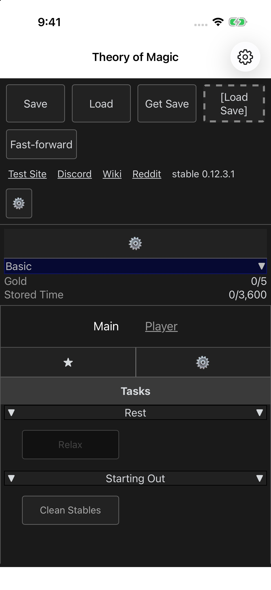
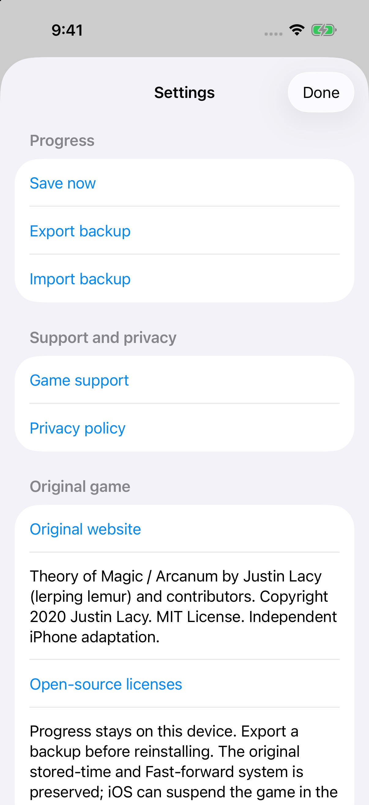

iPhone / Independent adaptation
Theory of Magic
An unfolding wizarding life
Work for your first coins, study arcane knowledge, and discover the many paths a wizard can take. Skills, spells and adventures unfold as you progress.
Player supportiPhone edition in preparation.
The experience
A wizard’s life begins with small steps.
Find a place in the world. Earn and study, learn a spell, choose a path, and discover the hall, equipment and companions that shape your wizard’s life.
- Study skills and learn spells
- Discover classes, homes and adventures
- Keep stored time and full-hall backups
For adult players. Includes fantasy combat and mature fantasy themes.


Your progress
A little care for your save.
Use native Settings to export or import a full wizard-hall backup through Files. The original Get Save control also offers its compatible save text through the native file controls.
Does this need an account?
No app account or developer-operated cloud-save service is enabled. Progress stays on your iPhone.
What happens while I’m away?
Original stored-time and Fast-forward mechanics are preserved. Keep a separate backup before reinstalling. No account, cloud service, advertising or in-app purchase is required.
Is it available now?
An independent iPhone adaptation of the original Theory of Magic / Arcanum game. The iPhone edition is in preparation and is not available to download.
Keep playing
A little help.
Backup guidance, privacy information and a place to report a problem.
Original Theory of Magic / Arcanum by Justin Lacy (lerping lemur) and contributors. Original software distributed under the MIT License; required notices are retained. This is an independent iPhone project; no original-creator endorsement is claimed. Visit the original game. Original MIT notice.
An independent iPhone adaptation of the original Theory of Magic / Arcanum game. The iPhone edition is in preparation and is not available to download.